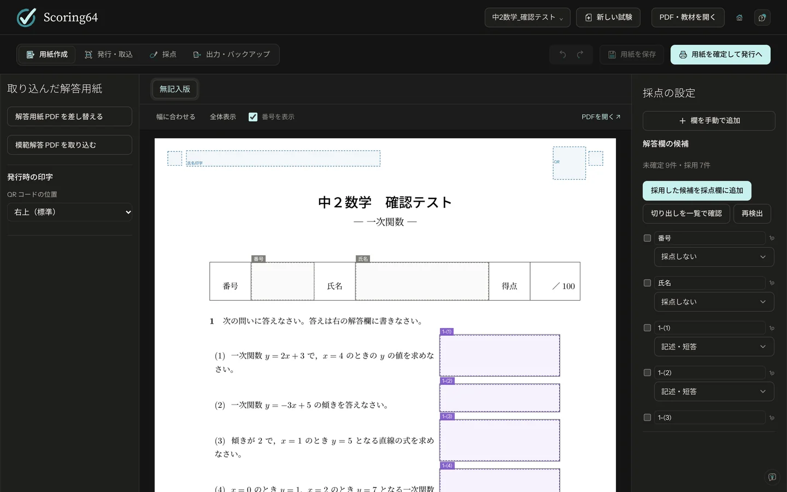
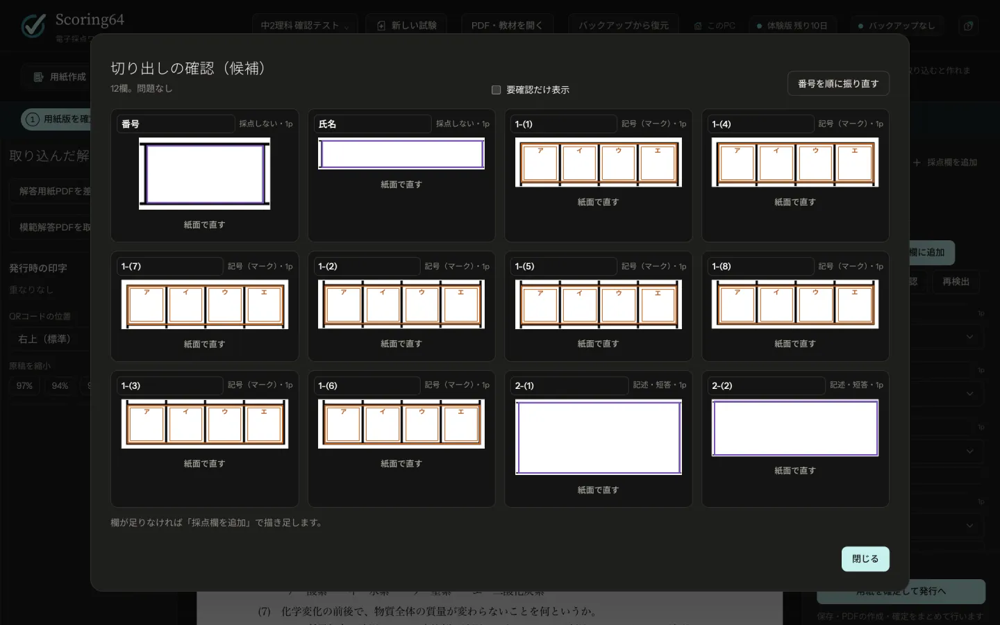
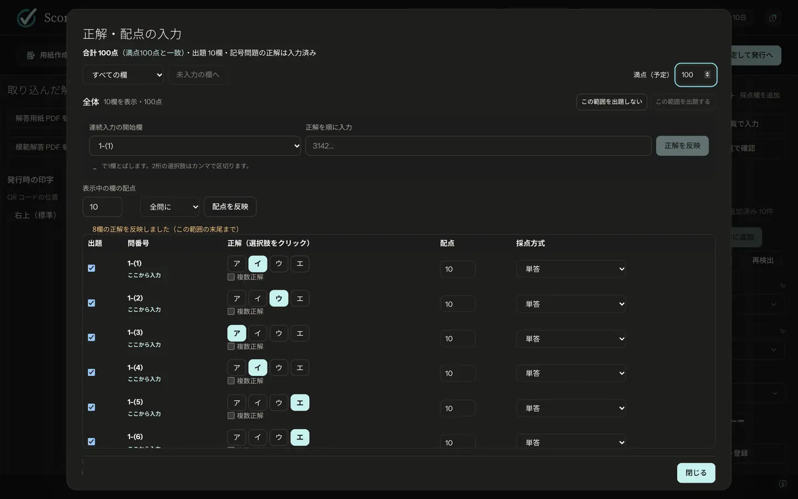
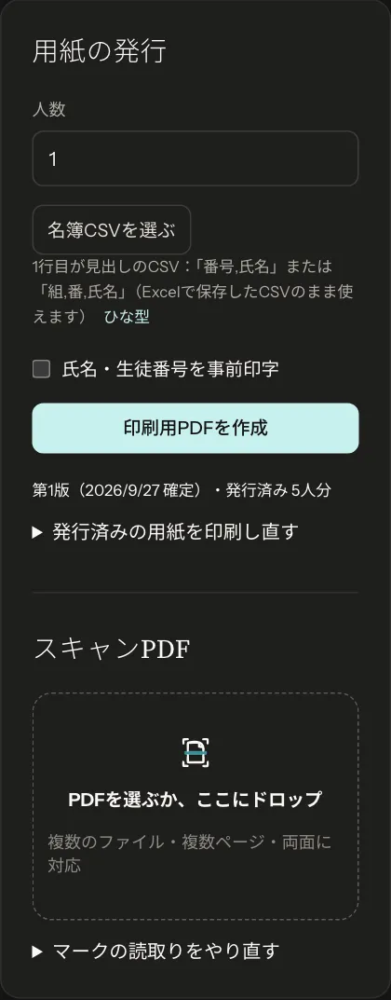
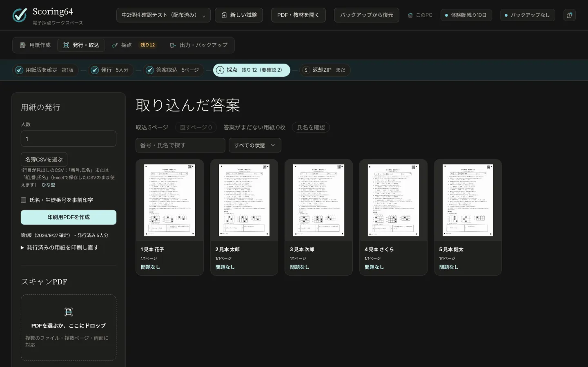
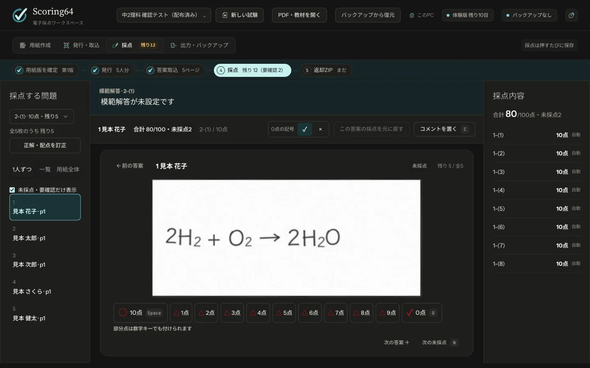
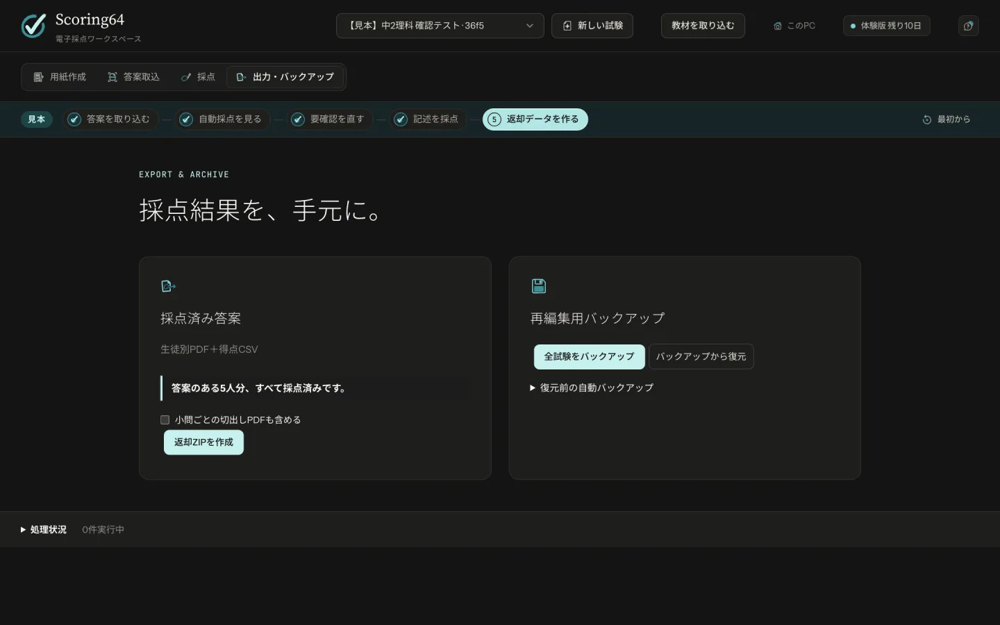
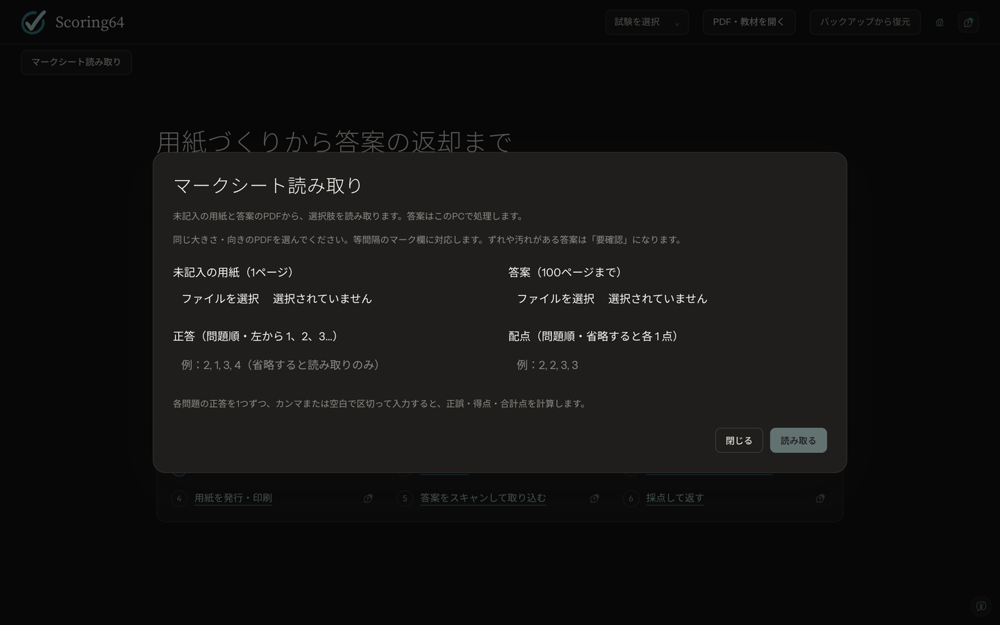

How to use
使い方
有料版の用紙の用意から返却まで、6つの手順です。画面の上のタブを、左から順に進めます。
用意するもの
| パソコン | Windows 10／11（64ビット）、または Apple Silicon（M1 以降）の Mac。採点や読み取りにインターネットは要りません（新しい版の確認と TeX の準備のときだけ使います） |
|---|---|
| プリンター | 用紙を等倍で印刷できるもの |
| スキャナー | 塾の複合機で構いません。PDFで保存でき、200〜300dpiで読み取れるもの |
| 生徒の筆記用具 | 記号問題は、HBかBの鉛筆で塗りつぶします |
Step 01
用紙を用意する
いつもの Word・Excel のプリントを、そのまま使えます。
- Word・Excel で「ファイル」→「名前を付けて保存」を選び、PDFで保存します。紙しかないときは、300dpiでスキャンしてPDFにします。
- 画面の上の「PDF・教材を開く」から、そのPDFを選びます。
- 解答欄の候補が出ます。紫は記述、橙は記号の欄です。
- 候補を1つずつ確かめます。違っていたら、クリックして種類・番号・範囲を直します。
- 「採用した候補を採点欄に追加」を押し、「切り出しを一覧で確認」で範囲を確かめます。
候補は、見落としや間違いが出ることがあります。必ず目で確かめてください。足りない欄は「採点欄を追加」で描き足せます。




- 記号の枠は7mm角以上にします。
- 右上の30mm四方は空けておきます。発行のときにQRコードを印刷します。
- 下線の空欄は15mm以上にします。
アプリの中で用紙を作ることもできます（「新しい試験」から）。用紙の組版に TeX（無料）を使います。パソコンに TeX がなければ、「新しい試験」や「？」の「TeX の状態」から、軽量版かフル版を選んで準備できます（初回はインターネットに接続します）。Word・Excel のPDFを取り込むだけなら、TeX は要りません。
アプリで用紙を作るときの操作
- 「新しい試験」で試験名を入れ、最初の用紙を選びます。「番号・氏名欄付きの文書」が最初に選ばれています。「白紙の文書」、「共通テスト用マークシート」（22科目）、「登録したテンプレートから作成」（東大の編集版8種を含む）、「これまでの試験を複製」からも始められます。
- 紙面をクリックして追加する位置を決め、「＋ 部品を追加」で解答欄・文字・数式・図などを置きます。欄は、「追加先」に出ている大問に入ります。自動のままでも、大問を選んでもかまいません。
- 紙面の何もないところをドラッグすると、触れた欄をまとめて選べます（Ctrl + A ですべて）。選んだ欄は、Ctrl + C・X・V でコピー・切り取り・貼り付けできます。
- 文字の書体は、メニューから選べます。このパソコンにある書体は「その他の書体」に並びます。
- よく使う用紙は、「テンプレート登録」で保存しておけます。
紙面は画面でそのまま描き、TeX は裏で仕上がりを確かめます。東大の編集版は配点が0点から始まるので、確定する前に入れてください。
Step 02
正解と配点
- 右の欄の「正解・配点を一覧で入力」を押します。
- 記号問題は、「連続入力の開始欄」を選び、正解を順に打って「正解を反映」を押します（例：
3142）。Excel の正解表を貼り付けることもできます。記述問題の「正解」に模範解答を書いておくと、採点のときに画面の上に出ます。 - 配点と採点方式を選びます。
- 右上の「用紙を確定して発行へ」を押します。確かめる点が一覧で出るので、「保存して確定する」を押します。保存・印刷用PDFの作成・用紙版の確定が続けて進みます。


採点方式の一覧
| 手動 | 記述問題。画面で先生が採点します |
|---|---|
| 単答 | 記号1つで正解 |
| 完答 | 複数の欄がすべて合って正解 |
| 順不同（部分点） | 順番は問わず、合った数だけ点 |
| 順不同完答 | 順番は問わず、すべて合って正解 |
| 全員正解 | 出題ミスのとき。全員に満点 |
Step 03
用紙を発行して印刷
- 「発行・取込」のタブで、人数を入れます。名簿があるときは「名簿CSVを選ぶ」で読み込みます（1行目が見出し：
番号,氏名か組,番,氏名）。 - 名前を印刷しておくときは、「氏名・生徒番号を事前印字」にチェックを入れます。
- 「印刷用PDFを作成」を押し、できたPDFを等倍で印刷します。
用紙には、右上にQRコード、四隅に黒い四角が入ります。取り込むときに、これで用紙を見分けます。
- HBかBの鉛筆で、枠の中を濃くはっきり塗りつぶす。丸やチェックは付けない（原則として答えとは読まず、先生の確認に回します）。
- 消すときは、消しゴムできれいに消す。


Step 04
答案をスキャンして取り込む
- 答案を複合機で読み取り、PDFにします。クラス分をまとめて1つのPDFにして構いません。
- 左の「スキャンPDF」に、PDFを選ぶかドラッグして入れます。複数のファイル・両面にも対応します。向きと表裏の順番は、QRコードで自動で整えます。
- 残っているものがあると、「取り込んだ答案」の上に「直すページ」（誰の答案か分からない・位置合わせに失敗・重複）や「答案がまだない用紙を見る」、「氏名を確認」が出ます。押して確かめます。
| 解像度 | 200〜300dpi |
|---|---|
| 色 | カラー（またはグレー）。白黒は薄めの塗りが消えるので使いません |
| 保存の形式 | |
| 用紙サイズ | 印刷したときと同じ |


Step 05
採点する
記号問題は自動で
取り込むと、記号問題は塗りの濃さで自動で採点されます。はっきり塗った答えはその選択肢、何も書いていない問題は無回答です。塗りが薄い・一部だけの答え、2つ塗った答え、消し跡などが濃く残った答え、丸やチェックなど塗りつぶしではない書き込みがある答えは決めずに「要確認」に回ります。先生が見て決めてください。
記述問題は1問ずつ
- 「採点」のタブで問題を選びます。
- 答案が1人ずつ大きく出ます。画面の下の「満点」（○）・「0点」（✓）・「部分点」（△）のボタンで採点すると、次の生徒に進みます。キーボードなら Space（か Enter）で満点、X か 0 で0点、P で部分点です。
- 「部分点」を押すとテンキーが開きます。0点から配点までの整数を入れ、「確定」か Enter で決めます（Esc で取り消し）。9点以下の問題は、数字キーを押すだけでその点になります。
- 必要なら「コメントを置く」（C キー）で答案に書き込みます。


配った後で正解・配点の誤りに気づいたら、「正解・配点を訂正」で直します。すべての答案を採点し直し、手で付けた点はそのまま残します。
Step 06
返す・残す
- 「出力・バックアップ」のタブで、確認が残っていないか見ます。
- 「返却ZIPを作成」を押します。生徒ごとの採点済みPDFと、得点のCSV（Excel で開けます）が入ります。
ZIPには全員分が入っています。生徒には、students フォルダの本人のPDFだけを渡してください。


バックアップ
「全試験をバックアップ」で、すべての試験を1つのファイル（.scoring64）に保存します。採点が終わるたびに取り、USBメモリなど別の場所にも置いてください。戻すときは「バックアップから復元」です。
無料のマークシート読み取り・採点
最初の画面の「マークシート読み取り」を押します。期限なし・キー不要で、答案はこのPCで処理します。
- 未記入の用紙（1ページのPDF）と答案PDF（100ページまで）を選びます。各PDFは20MB以内。同じページサイズ・向きにそろえてください。
- 用紙上で最初のマーク欄の左上をクリックし、問題数・選択肢数・横間隔・縦間隔・マーク欄の大きさを入力します。赤い枠をマーク欄に合わせます。等間隔のマーク欄に対応します。
- 「読み取る」を押します。選択肢は左から1、2、3…です。「複数マーク」「要確認」は答案と見比べてください。
- 正答と配点を問題順に入力して「読み取り・採点」を押すと、正誤・得点・ページごとの合計点を計算します。「結果CSV」で保存できます。要確認があるページも、読み取り候補で採点して合計点と要確認の問数を表示します（複数マークや候補のない問題は0点です）。要確認の答案は用紙と見比べ、合計点をそのまま確定した点にしないでください。記述採点・成績表・返却PDFの作成は有料版の機能です。

